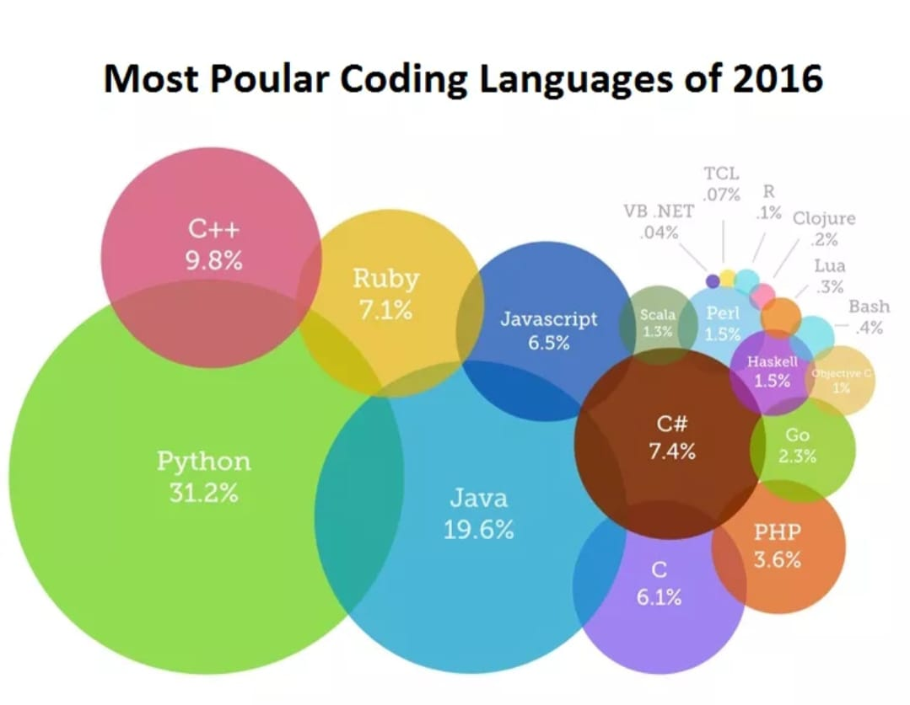

programming languages main page
Links:

Programming languages and computer coding have made life simpler for us. Whether it’s automobiles, banks, home appliances, or hospitals, every aspect of our lives depends on codes. No wonder, coding is one of the core skills required by most well-paying jobs today. Coding skills are especially of value in the IT, data analytics, research, web designing, and engineering segments.
So, which programming languages will continue to be in demand in 2020 and beyond? How many languages should you know to pursue your dream career? We will attempt to answer these tricky questions in this post.
The ever-growing list of programming languages and protocols can make it tough for programmers and developers to pick any one language that’s most suitable for their jobs or project at hand. Ideally, every programmer should have knowledge of a language that’s close to the system (C, Go, or C++), a language that’s object-oriented (Java or Python), a functional programming language (Scala), and a powerful scripting language (Python and JavaScript).
Whether you are aiming at joining a Fortune 500 firm or desire to pursue a work-from-home career in programming, it’s important to know what’s hot in the industry. Here are a few programming languages we recommend for coders who want to make it big in 2020.